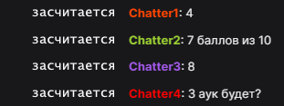

НЕ УКАЗАН TWITCH КАНАЛ (в текущей ссылке добавить ?channel=СЮДА)
Голосование в чате!
Напишите оценку от 1 до 10
Проголосовавших: 0
(можете это не менять и не забивать голову)
Единственное число - считаются только сообщения состоящие исключительно из одного числа,
но сообщения длиннее одного числа будут проигнорированы.
Первое число - считаются числа с которых начинаются сообщения,
но могут засчитываться лишние сообщения не относящиеся к оценке.
